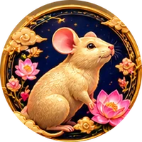

Strengths
- Quick-witted and clever
- Resourceful problem-solver
- Sociable and good with people
- Notices opportunities others miss
- Adapts well to change
CHINESE ZODIAC
1960 • 1972 • 1984 • 1996 • 2008 • 2020 • 2032
People born in the Year of the Rat are traditionally associated with quick wit, resourcefulness, and a sociable nature.

The Rat is the first animal in the Chinese zodiac and is traditionally associated with quick wit, resourcefulness, and sociability.
Quick-witted, resourceful, and sociable. Rats are natural problem-solvers who notice opportunities others miss.
If you were born in January or February, check the Lunar New Year date to confirm your zodiac sign.
Check My Birth Year →Monday, Tuesday
The five elements add another layer to the traditional zodiac system. Your element depends on your birth year.
Explore the Five Elements →Traditional zodiac interpretation only — not financial advice.
General lifestyle interpretation only — not medical advice.
The Rat opens the zodiac cycle, and tradition holds that it earned its place through cleverness rather than brute strength — famously riding on the Ox's back to cross the finish line first. That founding story captures the Rat well: resourceful, observant, and always a step ahead. Rats tend to be the first to spot a shift in a market, a conversation, or a relationship, and they're rarely caught flat-footed. Socially, they're charming and adaptable, equally comfortable working a room or quietly gathering information from the sidelines.
Quick-witted, resourceful, and sociable. Rats are natural problem-solvers who notice opportunities others miss.
Rats build wide, loosely-connected social networks rather than a small inner circle, and they're genuinely good at keeping in touch with dozens of people at once. That same love of possibility keeps them scanning for the next opportunity even when the current one hasn't played out yet — which can look restless to people who prefer to finish one thing before starting another.
Rats are attentive, communicative partners who enjoy trading ideas and plans as much as affection — a Rat in love is usually full of texts, plans, and small thoughtful gestures. What trips them up is trust: once burned, a Rat can become guarded even with partners who've done nothing to deserve the suspicion, so patience on both sides matters.
Rats do well in fast-moving roles that reward spotting trends early — sales, trading, media, anything where being first matters. They're natural networkers who build useful connections without much effort, though they can struggle with repetitive, slow-moving work that doesn't give their quick mind enough to chew on.
Can be restless or overly cautious with money and trust. That caution is useful in moderation, but left unchecked it can tip into holding back from good opportunities, or keeping people at arm's length who've actually earned more trust than that.
Rats connect easiest with signs who match their quick pace and ambition, and feel the most friction with signs whose slower, steadier rhythm can feel like a standstill.
Best matches: Dragon, Monkey, Ox
Can clash with: Horse
Fields that reward sharp thinking and fast opportunity-spotting tend to suit the Rat particularly well.
Business, writing, research, trading
For entertainment purposes only. Chinese zodiac interpretations are traditional and cultural, not scientifically proven.
See how the Rat traditionally matches each of the 12 animals.
See the full daily fortune for all 12 signs →
Enter your birthday to discover your Chinese zodiac animal, element, lucky signs, and more.
🔮 Check My Zodiac Sign →Rat years include 1960, 1972, 1984, 1996, 2008, 2020, 2032. The zodiac repeats every 12 years, and the zodiac year begins at Lunar New Year, not on January 1.
Traditionally, the Rat is associated with courage, confidence, independence, and determination. Quick-witted, resourceful, and sociable. Rats are natural problem-solvers who notice opportunities others miss.
The Rat's lucky colors in our guide are Blue, Gold, Green.
The Rat's lucky numbers are 2, 3.
Best matches are Dragon and Monkey, which share the Rat's compatibility triangle. Ox is also listed as a supportive match in our guide, while Horse can be the most challenging pairing.
It depends on your birth year — Wood: 1984 · Fire: 1996 · Earth: 2008 · Metal: 1960, 2020 · Water: 1972, 2032. Use the Zodiac Checker to confirm yours.
No. The zodiac year begins at Lunar New Year, which falls between late January and mid-February. If you were born in January or February, check the Lunar New Year date or use our Zodiac Checker.
No. Chinese zodiac interpretations are traditional and cultural, and they are not scientifically proven. Enjoy them for fun and self-reflection.
ជោគជតារាសី
1960 • 1972 • 1984 • 1996 • 2008 • 2020 • 2032
អ្នកដែលកើតក្នុងឆ្នាំជូត តាមប្រពៃណីរាសី ត្រូវបានផ្សារភ្ជាប់ជាមួយនឹងភាពឆ្លាតវៃ ភាពចេះរកឱកាស និងចូលចិត្តសេពគប់។
ជូតជាសត្វទី១ក្នុងរង្វង់រាសី ហើយតាមប្រពៃណីត្រូវបានផ្សារភ្ជាប់ជាមួយភាពឆ្លាតវៃ ភាពចេះរកឱកាស និងចូលចិត្តសេពគប់។
ឆ្លាតវៃ ឆបោក និងចូលចិត្តសេពគប់។ ជូតចេះរកឱកាសដែលអ្នកដទៃមើលមិនឃើញ។
ប្រសិនបើអ្នកកើតក្នុងខែមករា ឬកុម្ភៈ សូមពិនិត្យថ្ងៃចូលឆ្នាំចន្ទគតិ ដើម្បីបញ្ជាក់ឆ្នាំរាសីរបស់អ្នក។
ពិនិត្យឆ្នាំកំណើតរបស់ខ្ញុំ →ថ្ងៃច័ន្ទ, ថ្ងៃអង្គារ
ធាតុទាំងប្រាំបន្ថែមស្រទាប់មួយទៀតដល់ប្រព័ន្ធរាសីតាមប្រពៃណី។ ធាតុរបស់អ្នកអាស្រ័យលើឆ្នាំកំណើតរបស់អ្នក។
ស្វែងយល់ធាតុទាំងប្រាំ →ការបកស្រាយតាមប្រពៃណីរាសីប៉ុណ្ណោះ — មិនមែនជាដំបូន្មានហិរញ្ញវត្ថុទេ។
ការបកស្រាយទូទៅប៉ុណ្ណោះ — មិនមែនជាដំបូន្មានវេជ្ជសាស្ត្រទេ។
ជូតជាសត្វទី១ក្នុងនិមិត្តសញ្ញា ហើយតាមរឿងព្រេងបានមកដល់ត្រឹមតែដោយភាពឆ្លាតវៃ មិនមែនកម្លាំងកាយទេ — ល្បីល្បាញក្នុងការជិះលើខ្នងគោដើម្បីដល់មុនគេ។ រឿងនេះបង្ហាញពីជូតយ៉ាងច្បាស់៖ ចេះសម្របខ្លួន សម្លឹងមើលយ៉ាងល្អិតល្អន់ និងដើរមុនគេជានិច្ច។ ក្នុងសង្គម ជូតមានភាពទាក់ទាញ និងងាយនឹងសម្របខ្លួន ទោះនៅចំពោះមុខគេ ឬកំពុងប្រមូលព័ត៌មានពីចំហៀង។
ឆ្លាតវៃ ឆបោក និងចូលចិត្តសេពគប់។ ជូតចេះរកឱកាសដែលអ្នកដទៃមើលមិនឃើញ។
ជូតមានទំនាក់ទំនងសង្គមទូលំទូលាយ ប៉ុន្តែមិនសូវជិតស្និទ្ធិជ្រៅដូចក្រុមតូចមួយទេ ហើយអាចរក្សាទំនាក់ទំនងជាមួយមនុស្សច្រើនដំណាលគ្នាបានយ៉ាងល្អ។ ចំណង់ចំណូលចិត្តលើលទ្ធភាពថ្មីនេះ ធ្វើឱ្យជូតតែងតែស្វែងរកឱកាសបន្ទាប់ សូម្បីតែឱកាសបច្ចុប្បន្នមិនទាន់បានបញ្ចប់ ដែលអាចមើលទៅមិនស្ងប់ស្ងាត់ចំពោះអ្នកដែលចូលចិត្តបញ្ចប់រឿងមួយមុននឹងចាប់ផ្តើមមួយទៀត។
ជូតជាដៃគូដែលយកចិត្តទុកដាក់ និងចូលចិត្តប្រាស្រ័យទាក់ទង ចែករំលែកគំនិត និងផែនការស្រដៀងនឹងបង្ហាញសេចក្តីស្រឡាញ់ដែរ។ បញ្ហាធំបំផុតគឺទំនុកចិត្ត៖ ពេលបានខូចចិត្តម្តង ជូតអាចក្លាយជាប្រុងប្រយ័ត្នខ្លាំង ទោះចំពោះដៃគូដែលមិនបានធ្វើអ្វីខុសក៏ដោយ ដូច្នេះការអត់ធ្មត់ទាំងសងខាងសំខាន់ណាស់។
ជូតធ្វើការបានល្អក្នុងតួនាទីដែលផ្លាស់ប្តូរលឿន និងត្រូវការការសម្គាល់ទំនោរមុនគេ — ការលក់ ការជួញដូរ ផ្សព្វផ្សាយ។ ពួកគេជាអ្នកកសាងទំនាក់ទំនងធម្មជាតិ ប៉ុន្តែអាចពិបាកជាមួយការងារដដែលៗ និងយឺតដែលមិនផ្តល់ចន្លោះឱ្យគំនិតរហ័សរបស់ពួកគេ។
ជួនកាលមិនស្ងប់ស្ងាត់ ឬប្រុងប្រយ័ត្នខ្លាំងពេកចំពោះប្រាក់កាស និងទំនុកចិត្ត។ ភាពប្រុងប្រយ័ត្ននេះមានប្រយោជន៍ក្នុងកំរិតសមរម្យ ប៉ុន្តែប្រសិនបើច្រើនពេក វាអាចធ្វើឱ្យខកខានឱកាសល្អ ឬរក្សាចម្ងាយពីមនុស្សដែលពិតជាសមនឹងទទួលបានទំនុកចិត្តច្រើនជាងនេះ។
ជូតសមនឹងគ្នាលឿនបំផុតជាមួយនិមិត្តសញ្ញាដែលមានល្បឿន និងមហិច្ឆតាស្រដៀងគ្នា ហើយមានភាពតានតឹងបំផុតជាមួយនិមិត្តសញ្ញាដែលមានល្បឿនយឺត និងស្ថិតស្ថេរជាង។
ត្រូវគ្នាបំផុតជាមួយ៖ រោង, វក, ឆ្លូវ
ប្រឆាំងនឹង៖ មមី
វិស័យដែលផ្តល់រង្វាន់ដល់ការគិតរហ័ស និងការសម្គាល់ឱកាសមុនគេ ជាធម្មតាសមស្របនឹងជូតជាពិសេស។
អាជីវកម្ម ការសរសេរ ការស្រាវជ្រាវ ការជួញដូរ
សម្រាប់តែការកម្សាន្តប៉ុណ្ណោះ។ ការបកស្រាយរាសីជាប្រពៃណី និងវប្បធម៌ មិនត្រូវបានបញ្ជាក់ដោយវិទ្យាសាស្ត្រទេ។
មើលថាតើជូតត្រូវគ្នាជាមួយសត្វទាំង១២យ៉ាងដូចម្តេចតាមប្រពៃណី។
មើលសំណាងប្រចាំថ្ងៃសម្រាប់និមិត្តសញ្ញាទាំង១២ →
បញ្ចូលថ្ងៃកំណើតរបស់អ្នក ដើម្បីស្វែងរកសត្វនិមិត្តសញ្ញា ធាតុ និងសំណាងរបស់អ្នក។
🔮 ពិនិត្យនិមិត្តសញ្ញារបស់ខ្ញុំ →ឆ្នាំជូតរួមមាន 1960, 1972, 1984, 1996, 2008, 2020, 2032។ រង្វង់រាសីដដែលៗរៀងរាល់ ១២ឆ្នាំម្តង ហើយឆ្នាំរាសីចាប់ផ្តើមនៅថ្ងៃចូលឆ្នាំចន្ទគតិ មិនមែនថ្ងៃទី១ មករាទេ។
តាមប្រពៃណី ជូតត្រូវបានផ្សារភ្ជាប់ជាមួយភាពក្លាហាន ទំនុកចិត្ត ឯករាជ្យភាព និងការតាំងចិត្ត។ ឆ្លាតវៃ ឆបោក និងចូលចិត្តសេពគប់។ ជូតចេះរកឱកាសដែលអ្នកដទៃមើលមិនឃើញ។
ពណ៌សំណាងរបស់ជូតក្នុងមគ្គុទ្ទេសក៍របស់យើងគឺ ខៀវ, មាស, បៃតង។
លេខសំណាងរបស់ជូតគឺ 2, 3។
ត្រូវគ្នាបំផុតជាមួយ រោង, វក (ក្រុមតែមួយ)។ ឆ្លូវ ក៏ត្រូវបានរាប់ជាដៃគូជួយគាំទ្រក្នុងមគ្គុទ្ទេសក៍របស់យើង។ មមី អាចមានភាពប្រឈមជាងគេ។
ធាតុអាស្រ័យលើឆ្នាំកំណើតរបស់អ្នក — ឈើ៖ 1984 · ភ្លើង៖ 1996 · ដី៖ 2008 · លោហធាតុ៖ 1960, 2020 · ទឹក៖ 1972, 2032។ ប្រើម៉ាស៊ីនពិនិត្យរាសីដើម្បីបញ្ជាក់ឆ្នាំរបស់អ្នក។
ទេ។ ឆ្នាំរាសីចាប់ផ្តើមនៅថ្ងៃចូលឆ្នាំចន្ទគតិ ដែលធ្លាក់នៅចន្លោះចុងខែមករា និងពាក់កណ្តាលខែកុម្ភៈ។ ប្រសិនបើអ្នកកើតក្នុងខែទាំងពីរនេះ សូមពិនិត្យជាមួយម៉ាស៊ីនពិនិត្យរបស់យើង។
មិនបានទេ។ ការបកស្រាយរាសីជាប្រពៃណី និងវប្បធម៌ ហើយមិនត្រូវបានបញ្ជាក់ដោយវិទ្យាសាស្ត្រទេ។ សូមប្រើវាសម្រាប់ការកម្សាន្ត និងការស្វែងយល់ប៉ុណ្ណោះ។